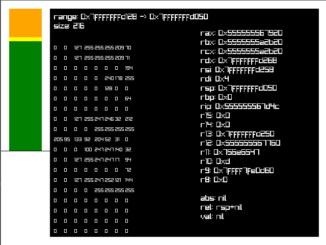

motivaption
Making your own debugger is criminally easy. For certain simple cases, it is much more complex to configure an existing debugger to work for you than it is to just write your own, and once you have your own debugger you can easily modify it to work for new projects, since you understand all the code.
Most of this slog post consists of me telling you about cool libc functions. It is your job to
put them together into a debugger. You are encouraged to explore things by/for yourself.
exec
First we want to be able to execute a program. This is pretty simple and to do this we'll use the
use nix ::unistd ::execv ;
execv (c"/bin/echo" , & [c"echo" , c"Hi!" ])?;
unreachable! ();
The console output will look something like this:
Hi!
PATH
environment variable.
So now we can execute a program. Note the presence of that
fork
fork is
simple. It duplicates the process. If you are now running as the parent, the child
process id is returned. If you are now running as the child,
use nix ::libc ::fork ;
println! ("Hello, World!" );
let pid = unsafe { fork () };
if pid == 0 {
println! ("I am the child process (PID= {pid })" );
} else {
println! ("I am the parent process (PID= {pid })" );
}
The console output will look something like this:
Hello, World!
I am the parent process (PID=172471)
I am the child process (PID=0)
Now we can pair
use nix ::libc ::fork ;
use nix ::unistd ::execv ;
let pid = unsafe { fork () };
if pid == 0 {
execv (c"/bin/echo" , & [c"echo" , c"Hi from child!" ])?;
} else {
println! ("Hi from parent!" );
}
println! ("All done!" );
The console output will look something like this:
Hi from parent!
Hi from child!
All done!
ptrace
ptrace is the most
important function here. It's going to allow us to hook into our target program and start messing with it.
The child process will call
use nix ::libc ::fork ;
use nix ::sys ::ptrace ;
use nix ::unistd ::execv ;
let pid = unsafe { fork () };
if pid == 0 {
ptrace ::traceme ()?;
execv (c"/path/to/program" , & [c"program" ])?;
} else {
// run tracer functions
}
After a child process (tracee) has called
waitpid
waitpid
waits for a process to change status, usually by a system interrupt. We can use this to wait for certain
events to fire on our tracee.
After an event is fired, the tracee will be paused and the tracer has to unpause it.
use nix ::sys ::ptrace ;
use nix ::sys ::wait ::{WaitPidFlag , WaitStatus , waitpid };
// wait for an event
let status = waitpid (child_pid , Some (WaitPidFlag ::WNOHANG ))?;
// do some stuff
if let WaitStatus ::Exited (_ , _ ) = status {
println! ("The process exited." );
}
// unpause tracee
ptrace ::cont (child_pid , None )?;
personality
personality sets a
bunch
of different execution options for the current process. We will be using the
example code
Let's make a program that waits for an event, sets the
use nix ::libc ::{ADDR_NO_RANDOMIZE , fork , personality };
use nix ::sys ::ptrace ;
use nix ::sys ::wait ::waitpid ;
use nix ::unistd ::{Pid , execv };
let pid = unsafe { fork () };
if pid == 0 {
unsafe { personality (ADDR_NO_RANDOMIZE as u64 ) };
ptrace ::traceme ()?;
execv (c"/path/to/program" , & [c"program" ])?;
} else {
// wait for event
let child_pid = Pid ::from_raw (pid );
_ = waitpid (child_pid , None )?;
// after event tracee is paused
// set register
let mut regs = ptrace ::getregs (child_pid )?;
regs .rax = 0x12345 ;
ptrace ::setregs (child_pid , regs )?;
// unpause tracee (continue)
ptrace ::cont (child_pid , None )?;
}
There are much more useful ptrace functions. I'll list a few here that you might want to look into.
-
ptrace (PTRACE_CONT ,... ) ptrace (PTRACE_STEP ,... )ptrace (PTRACE_GETREGS ,... )ptrace (PTRACE_SETREGS ,... )ptrace (PTRACE_PEEKDATA ,... )ptrace (PTRACE_POKEDATA ,... )
The control flow when using ptrace usually goes something like this: The tracer will use
moving on
Now our debugger is starting to take shape. We can hook into processes, read&write registers&memory, and step through instructions. At this point, you already have your own debugger. Congratulations! You did it! The rest of this slog post will just be showing you how to make it even better.
One small note. If you're reading the objdump of your binary and the instruction pointer
addresses aren't matching up, you may want to try
breakpoints
Breakpoints are surprisingly hacky. Here's how they work. First, replace the instruction at the address of the breakpoint with a system interrupt.
let old_value = ptrace ::read (child_pid , breakpoint_address )?;
// set the first byte to 0xCC
// 0xCC is the opcode for the INT3 system interrupt instruction.
let new_value = (old_value & !0xFF ) | 0xCC ;
ptrace ::write (child_pid , breakpoint_address , new_value )?;
Then wait until you hit that system interrupt.
// continue execution and wait until we hit the system interrupt.
ptrace ::cont (child_pid , None )?;
loop {
let status = waitpid (child_pid , None )?;
if let WaitStatus ::Stopped (_ , Signal ::SIGTRAP ) = status {
break ;
}
}
Then we can do whatever we want to that particular breakpoint.
println! ("Breakpoint hit!" );
Once we're done and we want to continue execution, we'll need to restore the old instruction we replaced.
// restore the instruction
ptrace ::write (child_pid , breakpoint_address , old_value )?;
And move the instruction pointer back by one step, so we can re-execute the restored instruction.
// move the instruction pointer back one step
let mut regs = ptrace ::getregs (child_pid )?;
regs .rip -= 1 ;
ptrace ::setregs (child_pid , regs )?;
And continue execution.
ptrace ::cont (child_pid , None )?;
You can refactor this into it's own little utility function to make things easier. Here is mine:
fn wait_until_addr (child_pid : Pid , breakpoint_address : *mut c_void ) -> Result <(), Box <dyn std ::error ::Error >> {
let old_value = ptrace ::read (child_pid , breakpoint_address )?;
// set the first byte to 0xCC
// 0xCC is the opcode for the INT3 system interrupt instruction.
let new_value = (old_value & !0xFF ) | 0xCC ;
ptrace ::write (child_pid , breakpoint_address , new_value )?;
// continue execution and wait until we hit the system interrupt.
ptrace ::cont (child_pid , None )?;
loop {
let status = waitpid (child_pid , None )?;
if let WaitStatus ::Stopped (_ , Signal ::SIGTRAP ) = status {
break ;
}
}
// restore the instruction
ptrace ::write (child_pid , breakpoint_address , old_value )?;
// move the instruction pointer back one step
let mut regs = ptrace ::getregs (child_pid )?;
regs .rip -= 1 ;
ptrace ::setregs (child_pid , regs )?;
Ok (())
}
Then you can use it like this:
wait_until_addr (child_pid , my_address_i_want_to_stop_at )?;
// do something
ptrace ::cont (child_pid , None )?;
symbols
Right now we're having to look at the raw addresses of things in our program. That's a huge pain. It'd be nice if we could extract the symbols out of an ELF binary and use it to see the names of everything.
You can use the elf Rust crate to parse ELF files. I
won't get into implementation details here but let's say we now magically have the symbol table. A mapping
of
Remember that small note above? About things being offset by
let rip = ptrace ::getregs (child_pid )?.rip - 0x5555_5555_4000 ;
// Find the closest function that `rip` could be in.
for addr , name in symbol_table .sort_ascending () {
if rip > addr {
println! ("We are inside the function: {name }" );
break ;
}
}
You can also use it to convert symbols to addresses.
wait_until_addr (child_pid , symbol_table .get ("my_add_function" ))?;
conclusion
Writing your own debugger is easy and fun! That's the take-away of this slog post. You can just do things.
Here's a screenshot of my stack debugger I used extensively in my alloca shenanigans series.
